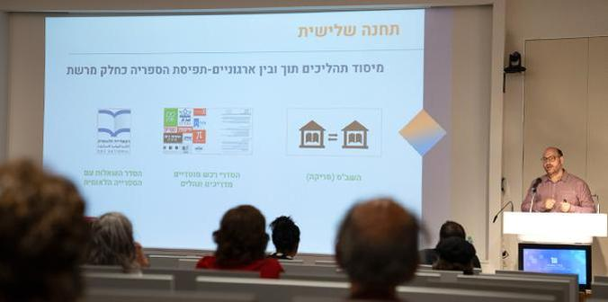
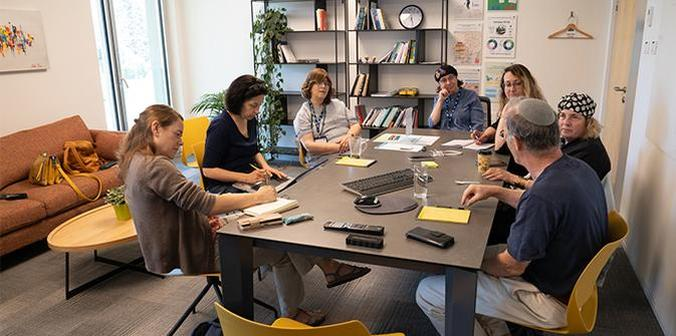
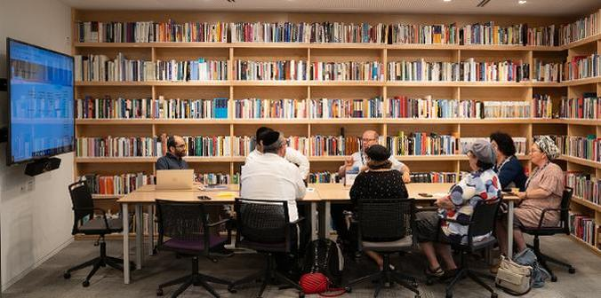
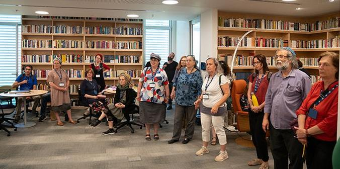

Participants gather at the start of the conference (Photo: Simanim)
In late June 2023, the Mandel Foundation–Israel hosted a conference at the Mandel headquarters in Jerusalem that was attended by dozens of representatives from 25 institutions, as well as Mandel faculty, fellows, graduates and staff. Organized by the Mandel Library and Resource Center, the conference began with a presentation by Liad Mousan Shemesh, the Foundation’s librarian and information specialist, who recounted how the library was established and surveyed current efforts aimed at its continued development.
 Liad Mousan Shemesh (Photo: Simanim)
The library and resource center of the Mandel Foundation–Israel serves all members of the Mandel community. Its purpose is to make high-quality and relevant information available to practitioners in the fields of education, society, and culture via online access to information systems. It also provides various support services, including individual consultations using advanced information technologies. Rachel Zeitoun, coordinator of the Forum of Directors of College Libraries in Israel, noted that considerable effort, planning, and resources were invested in the conference, which centered around a discussion of the main issues of concern to information specialists and to the members of the Mandel community.
 A group discussion (Photo: Simanim)
During the second part of the event, participants split into discussion groups and examined challenges facing the libraries of Israel’s academic colleges, as well as the Mandel library. Subjects discussed included the use of advanced technologies in the work of information specialists; information literacy in the Haredi and Arab publics; the use of libraries from the perspective of learners; research based on regional needs; researching and retrieving relevant information for practitioners; and making information systems accessible to all users.
The group discussions generated several important and interesting insights:
- We live in an age in which content is created and sold digitally and free access to materials is constantly increasing, while library budgets are being cut at the same time. Consequently, it is important to ramp up collaboration within the library ecosystem, based on agreements for inter-library loans.
- With the growing accessibility and use of generative AI, the work of information specialists is changing dramatically. Traditionally, their role was that of a consultant. They encouraged researchers to understand the underlying principles of the work and concepts being explored, developed a search strategy for navigating between different information resources, helped researchers understand the limitations of their work, and sought ways of bridging information gaps. Today, their work has been augmented by modern research tools such as information retrieval systems and generative AI platforms, which require expertise.
- Generative AI must be used carefully and with a critical eye. Users need help in formulating and reformulating research questions, presenting different views, setting out the broad context of the issue at hand, sorting content into working categories, and defining keywords. AI text generators can also be a useful tool for students and fellows with learning disabilities.

A discussion in the Mandel Library and Resource Center (Photo: Simanim)
- Libraries must make the effort to provide culturally adapted services for populations that need them; for example, they must come up with solutions for addressing the language challenges of Arabic speakers in a Hebrew environment, or gaps in literacy among Haredi users. There is a significant lack of librarians who are trained to provide culturally adapted services. Accordingly, a national body should be developed that can share information about making content accessible to different populations and about ways to improve the provision of culturally adapted services in institutions of higher education.
- The Mandel Centers for Leadership in the North and in the Negev pointed out the need for developing regional approaches – a need that is shared by colleges where students carry out practicums. Librarians or information specialists with particular expertise in a certain region are able to find focused information and research that is not necessarily accessible to the wider public. Participants in the group that discussed this matter agreed that there is a considerable amount of hidden information that emerges from search queries and consultations.
- How should the immense quantity of knowledge in libraries be made accessible to users? The group that focused on this challenge concluded that a promising approach is to embed information specialists into study programs, particularly during program components that require the development of research skills. Libraries should offer training that explains the mechanical and technological rationale behind search engines, focusing on how to formulate questions and create searches using strategic words. They should also provide research skills and critical approaches to information sources at the beginning of the learning process. Providing such training for students and fellows also forges good relations with information specialists and promotes more in-depth study.
The challenges facing the Mandel Foundation’s library are shared by other libraries and information centers around Israel. The conference highlighted the need for shared forums for peer learning and collaborative thinking. Additional events in various formats are being planned by the library for the future.
 A tour of the library (Photo: Simanim)
{kind=link}
{kind=link}
{kind=link}
{kind=link}
{kind=link}